Replacing the Reagent Storage Module (RSM)
This topic includes information about how to replace the reagent storage module (RSM).
Safety Reminder
Servicing the DxI 9000 instrument involves potential risks for pinch and puncture, electrical shock, and exposure to hazardous materials. You must mitigate these risks by taking appropriate countermeasures. See Safety for more information.
Location
The following illustration shows the location of the components you will work with in this procedure.

| 1 | Reagent storage module (RSM) |
Recommended Tools
- 4mm M5 Hex Drive
- 3mm M4 Hex Drive
- 2.5mm M3 Hex Drive
- Parafilm
Step 1: Turn Off the Instrument
Turn off the instrument. See Turning Off the Instrument for more information.
Step 2: Remove Covers, Doors, and Drawers
- Open both upper covers and the rear bi-fold doors.
- Remove the door that covers the fluidics drawer and console PC.
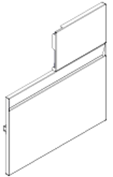
- Open the sample presentation unit (SPU) cover.
- Push the carriage back into the instrument so that it does not interfere with the swing arm.
- To open the swing arm, grab the SPU handle located underneath the middle portion of the SPU. Pull the SPU toward you (approximately six inches) and then pivot the right side out and to the left.
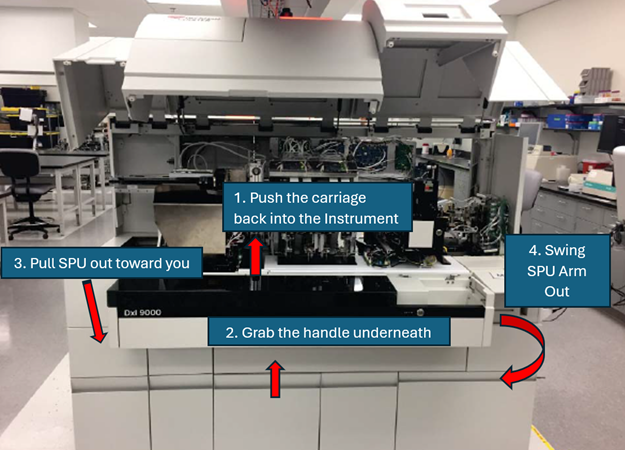
- Remove the RSM cover. The cover is held in by clips. Pull them straight out to remove the cover.
- Remove the RSM door. The door is held in by pins. Grab the door by its indentations and lift the door straight up.
- From the front of the instrument, pull open the solid waste drawer and remove the bin.
- Replace the biobag.
- Remove the solid waste drawer and the removable slide assembly.
- Remove the two screws that hold the solid waste intermediate tray in place.
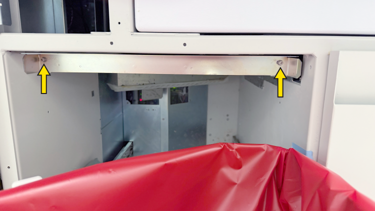
- Pull and slide the tray on the rails to remove it. Place the tray in the new bio-bag in the waste bin.
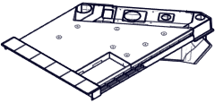
Note: You must first remove the solid waste intermediate tray so that when you remove the RSM you have enough clearance for the RSM waste door assembly. - Grab the built-in handles on the RSM door and lift the door straight up to remove it.
- Remove the deck cover insert.
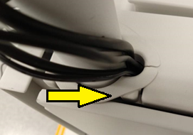
- Remove the four fasteners that hold the reagent loader deck cover in place.
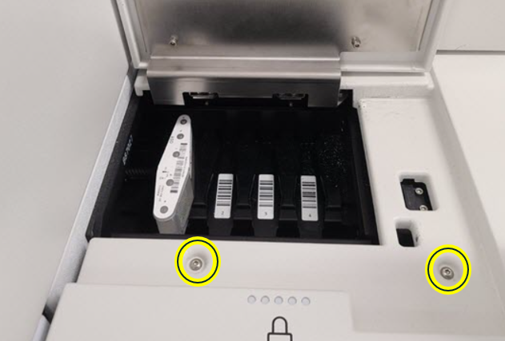
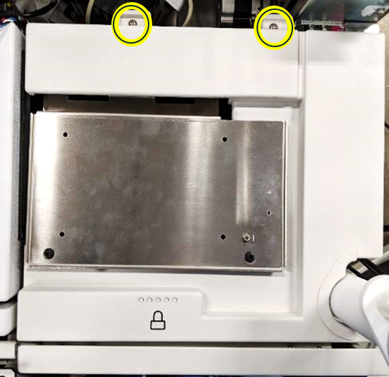
- Remove the cover.
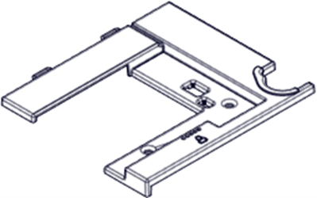
- Loosen three fasteners to remove the side panel.
Note: You don't need to remove the fasteners to remove the panel.
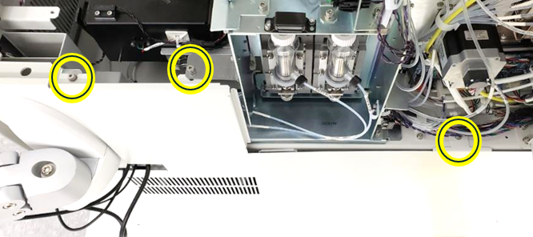
- Remove the reagent loader cover assembly located above the front corner of the reagent load area, above the fluidics/console door.
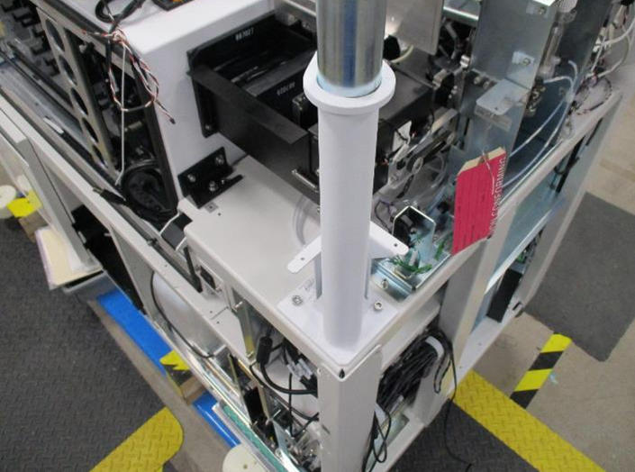
Step 3: Disconnect the Pneumatic Tubing to the RSM
From the front of the instrument, disconnect the pneumatic tubing for the RSM waste and RSM gripper.
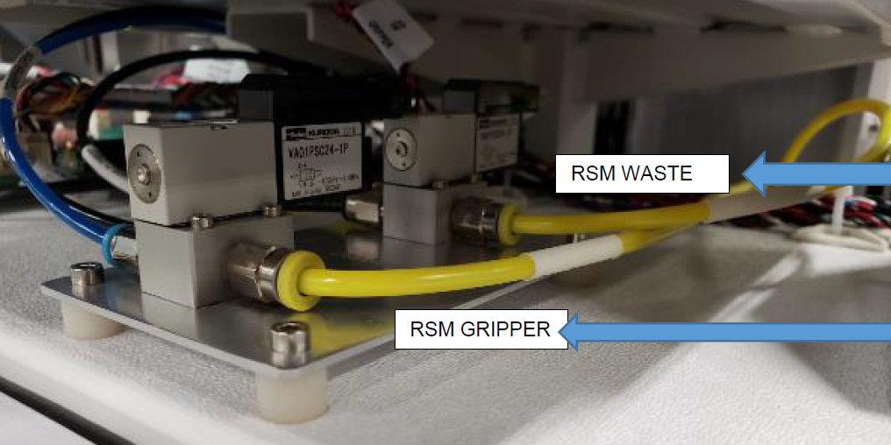
Step 4: Disconnect the Cables to the RSM
- Remove the reagent storage interface printed circuit board (PCB) cover.
- Remove the dMCC PCB cover from the back of the RSM.
- Disconnect the following cables:
- J3 (B1) USB
- J12 (B1) power
- J17 (B1)
- J6 (D12) power
- J7 (D12) USB
- J15 (W3)
- Therm Reag Air to Thermistor Air Temp RSM
- Disconnect the barcode reader from the Serial port.
Step 5: Remove the RSM Subsystem from the Instrument Chassis
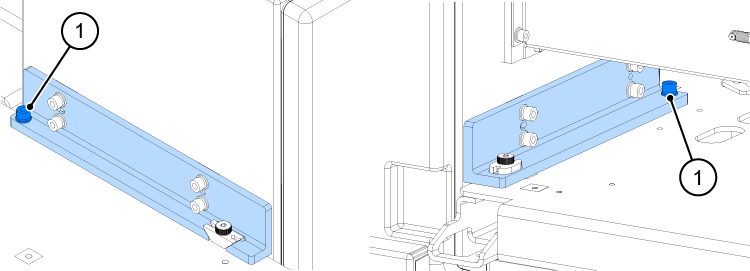
| 1 | Bracket fastener |
- On the left and right of the RSM subsystem, use a 4mm hex driver to unscrew the two M5 screws with washers.
- Unscrew the shoulder bolt and washer from the left-side cleat positioner.
Note: The right and left cleats are different and not interchangeable. Keep track of each side's associated parts.Important: The cleats for earlier models may be in the back of the module, or in a combination of sides and back.
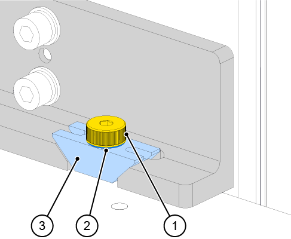
1 Shoulder bolt 2 Washer 3 Cleat positioner, left - Unscrew the shoulder bolt and washer from the right-side cleat positioner.
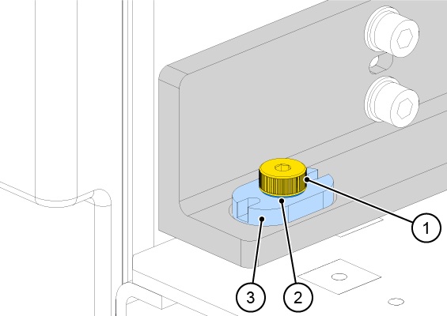
1 Shoulder bolt 2 Washer 3 Cleat positioner, right - Carefully remove the entire RSM subsystem by pulling directly towards the front of the instrument and lifting it up slightly.
Caution: Because there are waste door components on the bottom of the RSM subsystem, be careful when setting the RSM down. You may need to lift the tray loader slightly higher for the motor to clear. Also, be careful not to pinch or stretch cables or wires.
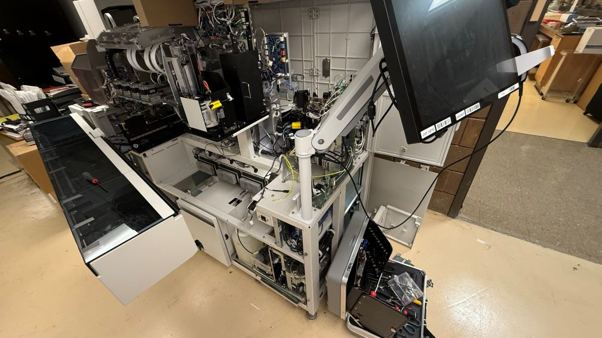
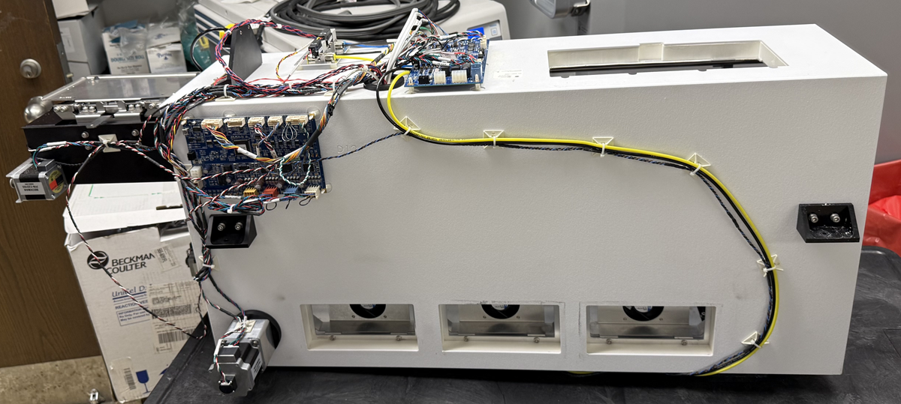
Step 6: Install the RSM Subsystem onto the Instrument Chassis
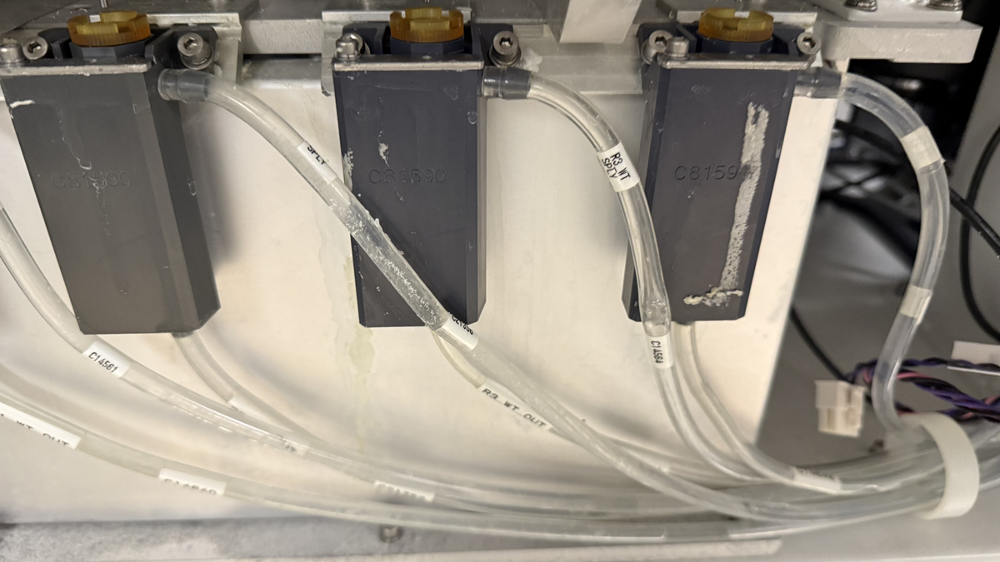
- Place the subsystem into the instrument so that it sits on the positioning pins in the instrument chassis.
- Align the right and left cleats with their mounting holes.
- Place the right-side cleat positioner and tighten the bolt with the washer between the bolt and cleat.
Note: When fully tightened, the surfaces on the cleat positioner and cleat should be flush.
1 Shoulder bolt 2 Washer 3 Cleat positioner, right - Place the left-side cleat positioner and tighten the bolt with the washer between the bolt and cleat.
Note: When fully tightened, the surfaces on the cleat positioner and cleat should be flush.
1 Shoulder bolt 2 Washer 3 Cleat positioner, left - On the left and right of the RSM subsystem, use a 4mm hex driver to screw in the two M5 screws with washers.
Step 7: Connect the Cables to the RSM
- Connect the barcode reader to the Serial connection.
- Connect the following cables:
- J3 (B1) USB
- J12 (B1) power
- J17 (B1)
- J6 (D12) power
- J7 (D12) USB
- J15 (W3)
- Therm Reag Air to Thermistor Air Temp RSM
- Place the dMCC PCB cover on the back of the RSM.
- Place the reagent storage interface PCB cover.
Step 8: Connect the Pneumatic Tubing to the RSM
From the front of the instrument, connect the pneumatic tubing for the RSM waste and RSM gripper.
Step 9: Attach Covers, Doors, and Drawers
- Attach the reagent loader cover assembly above the front corner of the reagent load area, above the fluidics/console door.
- Tighten three fasteners to attach the side panel.
- Attach the four fasteners that hold the reagent loader deck cover in place.
- Attach the deck cover insert.
- Attach the RSM door.
- Slide the solid waste intermediate tray on the rails to insert it.
- Attach the two screws that hold the tray in place.
- Insert the removable slide assembly and the solid waste drawer.
- Insert the waste bin and close the solid waste drawer.
- Attach the RSM door.
- Attach the RSM cover.
- Close the SPU swing arm.
- Pull the carriage back out of the instrument.
- Close the SPU cover.
- Attach the door that covers the fluidics drawer and console PC.
- Close both upper covers and the rear bi-fold doors.
- Turn on the instrument. See Turning On the Instrument for more information.
Step 10: Perform Alignments
Perform necessary alignments and/or adjustments for the affected components and subsystems. See Aligning the Reagent Pipettor to Reagent Storage (Pipetting Nest) for more information.
Step 11: Complete Verification
Complete the verification of service repair. See Verification of Service Repairs for more information.